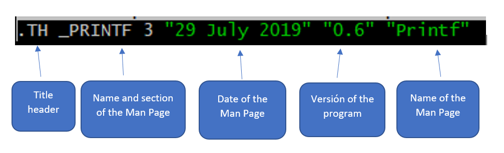
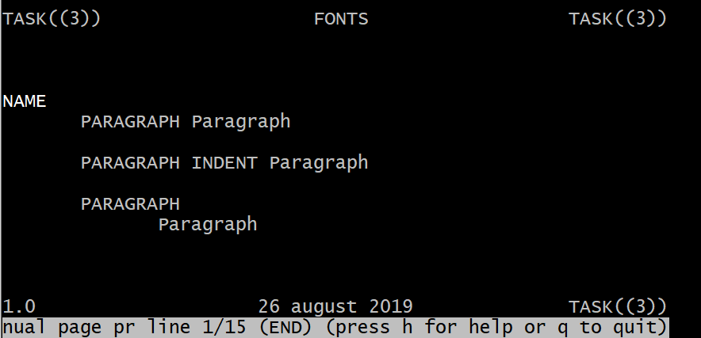
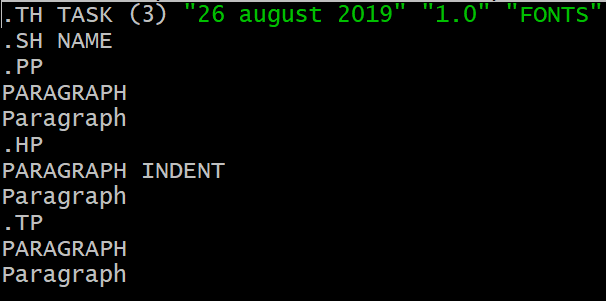

The manpage is a pre-installed manual in Linux distributions.
The manpage is divide between of several manners,
but almost all follow the your schema according to the needs.
- NAME
- SYNOPSIS
- EXAMPLES
- SEE ALSO
- BUGS
- AUTHOR
The manpage is a pre-installed manual in Linux distributions.
The manpage is divide between of several manners,
but almost all follow the your schema according to the needs.
The man sections are created for split of a manner more ordered.
we can search effectively according with number is the mean of the man that we watch.
Make a manpage is something like to work with tags in html.
.TH _PRINTF 3 "29 July 2019" "printf"
If, we want make a section, you must write .SH tag
If, we want make a sub-section of a normal section, you write .SS
The paragraph in Man Page are very important for divide text congruently.
 .PP
.HP
.TP